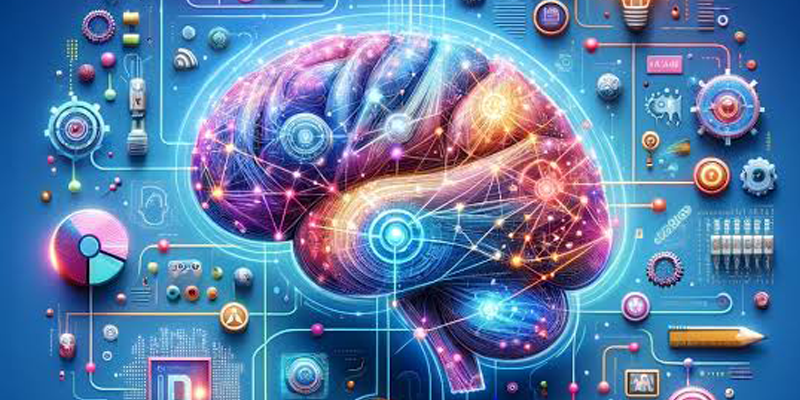
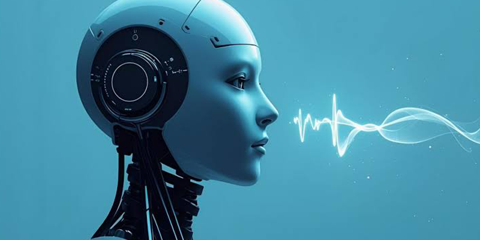

.jpeg)
AI Idea Lab — จุดประกายไอเดียด้วย AI
ความคิดสร้างสรรค์เป็นจุดเริ่มต้นของทุกผลงาน ไม่ว่าจะเป็นโปสเตอร์ บทความ วิดีโอ งานนำเสนอ หรือคอนเทนต์สำหรับสื่อสังคมออนไลน์ แต่บางครั้งสิ่งที่ยากที่สุดไม่ใช่การลงมือทำ แต่คือการคิดว่า “จะทำอะไรดี” AI สามารถเข้ามาเป็นผู้ช่วยในการระดมความคิดและพัฒนาไอเดียให้กลายเป็นแนวทางที่ชัดเจนมากขึ้น ผู้ใช้งานสามารถบอก AI เพียงหัวข้อหรือปัญหาที่ต้องการแก้ไข จากนั้นให้ AI ช่วยเสนอแนวคิดหลายรูปแบบ

เปรียบเทียบข้อดีข้อเสีย หรือพัฒนาคอนเซ็ปต์ให้เหมาะกับกลุ่มเป้าหมาย เช่น หากต้องการทำโปสเตอร์ประชาสัมพันธ์กิจกรรมของโรงเรียน สามารถให้ AI ช่วยคิดแนวทางการออกแบบ สี สไตล์ ข้อความ และองค์ประกอบที่เหมาะสมได้ การใช้ AI เพื่อระดมความคิดไม่ได้หมายความว่าเราต้องนำทุกสิ่งที่ AI เสนอมาใช้ทั้งหมด แต่ควรนำแนวคิดเหล่านั้นมาเป็นจุดเริ่มต้น แล้วใช้ประสบการณ์และความคิดสร้างสรรค์ของเราในการคัดเลือกและปรับปรุง

AI จึงเปรียบเสมือน “คู่คิดดิจิทัล” ที่ช่วยเปิดมุมมองใหม่ ๆ ทำให้เราเห็นความเป็นไปได้ที่หลากหลาย และช่วยเปลี่ยนความคิดที่ยังไม่ชัดเจนให้กลายเป็นแนวคิดที่พร้อมนำไปสร้างเป็นผลงานจริง สิ่งที่จะได้เรียนรู้ การระดมไอเดียด้วย AI การกำหนดกลุ่มเป้าหมาย การสร้าง Concept การคิด Theme และ Mood & Tone การพัฒนาไอเดียจากง่ายไปสู่ผลงานจริง
back